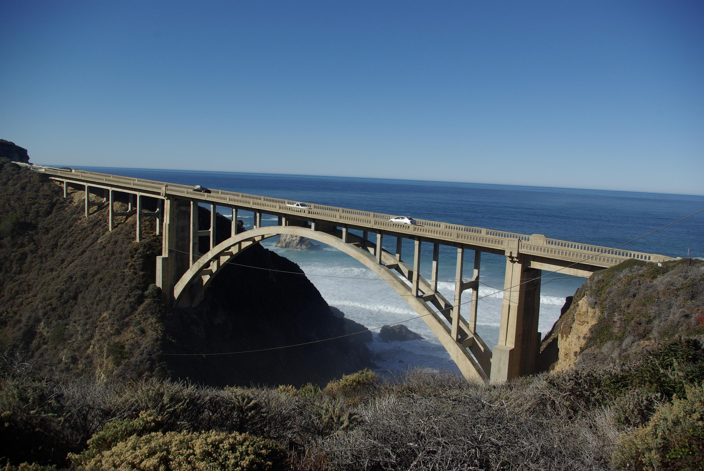
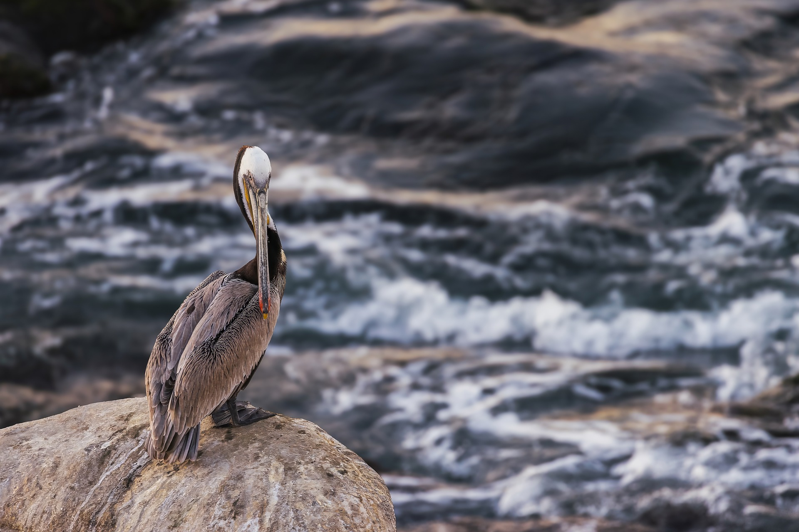
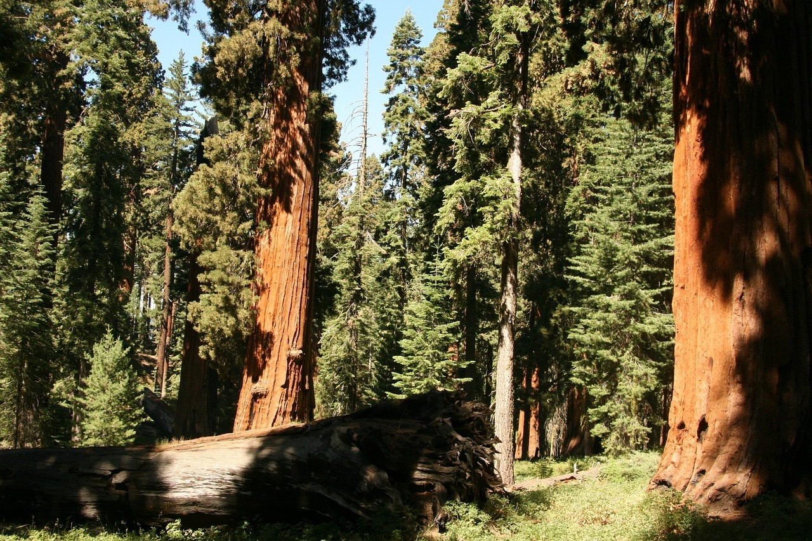

Our Story
Our Mission
We believe a great retreat should leave you feeling more connected to nature and to yourself.
Every stay at Pacific Trails Resort is designed around that goal, from our sunrise yoga sessions and guided hikes to cooked-to-order breakfasts made with ingredients from local farms. Between meals, guests paddle kayaks along the sheltered coves and watch for pelicans and peregrine falcons from the bluffs. Our yurts give you the comfort of a hotel without walls between you and the wilderness. We are proud to share our love of the California coast with our guests and hope you will return again and again.


01
How It All Began
Pacific Trails Resort was founded upon a simple belief: real peace comes from slowing down and embracing nature. The founders first discovered these stunning coastal bluffs while exploring on weekends. They kept coming back, drawn by the ocean mist drifting through the redwoods and the unforgettable sunsets over the Pacific. When they had the chance to make this land their own, they took it and created a place with cozy yurts so others could admire its calm beauty too.
Real peace comes from slowing down and embracing nature.
02
What We Value
-
Stewardship
We maintain five miles of trails across the property, winding through coastal scrub, redwood groves, and open bluffs. We also partner with the neighboring state park to protect native habitat, so the land stays as wild and beautiful as the day our founders first saw it.
-
Wellness
Time outdoors, healthy food, and quiet spaces help our guests recharge. Days here might start with a misty hike along the bluffs and end with a home-cooked meal made from local ingredients. In between, there's always room to rest, read, or simply listen to the waves.
-
Hospitality
Our small team knows every guest by name. Tell us what you're hoping for, whether that's a sunrise hike, a tide pool walk, or a lazy afternoon with a good book, and we'll plan a custom adventure just for you.

03
Wander Among the Redwoods
Just a short walk from the yurts, our trails lead into quiet groves of towering redwoods and ferns. From foggy mornings to golden evenings, every day on the property looks a little different, and there's always a new path waiting to be explored.